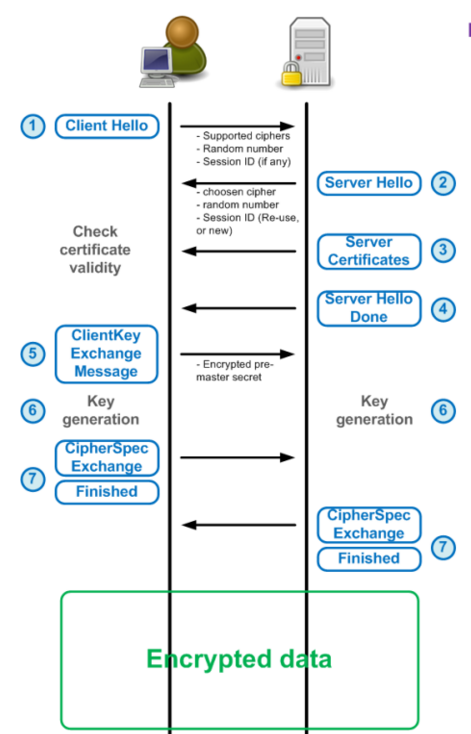

SSL协议 #
SSL是一种安全协议，目的是为互联网通信提供安全及数据完整性保障。
SSL介绍
一个简单的工作流程: #
-
浏览器请求一个安全页面(https://)。
-
Web服务器返回公钥及其证书。
-
浏览器检查该证书是否由可信任的机构颁发，并且是与站点相关的有效证书。
-
浏览器使用公钥加密随即对称加密密钥，和通过随即加密密钥加密的http数据一同发送给Web服务器。
-
Web服务器通过私钥解密随即对称加密密钥，并使用它解密http数据。
-
Web服务器返回通过随即对称加密密钥加密的请求html文本和http数据。
-
浏览器通过随即对称加密密钥解密html文本和http数据并展示信息。
公私钥: #
非对称加密，使用私钥/公钥对加密，数据可以被一个密钥加密，但只能被另一个密钥对解密。该密钥对自己保留一个私钥，并将公钥分配给每个人。
Message --> [Public Key] --> Encrypted Message --> [Private Key] --> Message
证书: #
证书加载在浏览器或者其他客户端党当中，证书包含了证书所有者的信息。一个例子:
Certificate:
Data:
Version: 3 (0x2)
Serial Number: 1 (0x1)
Signature Algorithm: md5WithRSAEncryption
Issuer: C=FJ, ST=Fiji, L=Suva, O=SOPAC, OU=ICT, CN=SOPAC Root CA/Email=administrator@sopac.org
Validity
Not Before: Nov 20 05:47:44 2001 GMT
Not After : Nov 20 05:47:44 2002 GMT
Subject: C=FJ, ST=Fiji, L=Suva, O=SOPAC, OU=ICT, CN=www.sopac.org/Email=administrator@sopac.org
Subject Public Key Info:
Public Key Algorithm: rsaEncryption
RSA Public Key: (1024 bit)
Modulus (1024 bit):
00:ba:54:2c:ab:88:74:aa:6b:35:a5:a9:c1:d0:5a:
9b:fb:6b:b5:71:bc:ef:d3:ab:15:cc:5b:75:73:36:
b8:01:d1:59:3f:c1:88:c0:33:91:04:f1:bf:1a:b4:
7a:c8:39:c2:89:1f:87:0f:91:19:81:09:46:0c:86:
08:d8:75:c4:6f:5a:98:4a:f9:f8:f7:38:24:fc:bd:
94:24:37:ab:f1:1c:d8:91:ee:fb:1b:9f:88:ba:25:
da:f6:21:7f:04:32:35:17:3d:36:1c:fb:b7:32:9e:
42:af:77:b6:25:1c:59:69:af:be:00:a1:f8:b0:1a:
6c:14:e2:ae:62:e7:6b:30:e9
Exponent: 65537 (0x10001)
X509v3 extensions:
X509v3 Basic Constraints:
CA:FALSE
Netscape Comment:
OpenSSL Generated Certificate
X509v3 Subject Key Identifier:
FE:04:46:ED:A0:15:BE:C1:4B:59:03:F8:2D:0D:ED:2A:E0:ED:F9:2F
X509v3 Authority Key Identifier:
keyid:E6:12:7C:3D:A1:02:E5:BA:1F:DA:9E:37:BE:E3:45:3E:9B:AE:E5:A6
DirName:/C=FJ/ST=Fiji/L=Suva/O=SOPAC/OU=ICT/CN=SOPAC Root CA/Email=administrator@sopac.org
serial:00
Signature Algorithm: md5WithRSAEncryption
34:8d:fb:65:0b:85:5b:e2:44:09:f0:55:31:3b:29:2b:f4:fd:
aa:5f:db:b8:11:1a:c6:ab:33:67:59:c1:04:de:34:df:08:57:
2e:c6:60:dc:f7:d4:e2:f1:73:97:57:23:50:02:63:fc:78:96:
34:b3:ca:c4:1b:c5:4c:c8:16:69:bb:9c:4a:7e:00:19:48:62:
e2:51:ab:3a:fa:fd:88:cd:e0:9d:ef:67:50:da:fe:4b:13:c5:
0c:8c:fc:ad:6e:b5:ee:40:e3:fd:34:10:9f:ad:34:bd:db:06:
ed:09:3d:f2:a6:81:22:63:16:dc:ae:33:0c:70:fd:0a:6c:af:
bc:5a
-----BEGIN CERTIFICATE-----
MIIDoTCCAwqgAwIBAgIBATANBgkqhkiG9w0BAQQFADCBiTELMAkGA1UEBhMCRkox
DTALBgNVBAgTBEZpamkxDTALBgNVBAcTBFN1dmExDjAMBgNVBAoTBVNPUEFDMQww
CgYDVQQLEwNJQ1QxFjAUBgNVBAMTDVNPUEFDIFJvb3QgQ0ExJjAkBgkqhkiG9w0B
CQEWF2FkbWluaXN0cmF0b3JAc29wYWMub3JnMB4XDTAxMTEyMDA1NDc0NFoXDTAy
MTEyMDA1NDc0NFowgYkxCzAJBgNVBAYTAkZKMQ0wCwYDVQQIEwRGaWppMQ0wCwYD
VQQHEwRTdXZhMQ4wDAYDVQQKEwVTT1BBQzEMMAoGA1UECxMDSUNUMRYwFAYDVQQD
Ew13d3cuc29wYWMub3JnMSYwJAYJKoZIhvcNAQkBFhdhZG1pbmlzdHJhdG9yQHNv
cGFjLm9yZzCBnzANBgkqhkiG9w0BAQEFAAOBjQAwgYkCgYEAulQsq4h0qms1panB
0Fqb+2u1cbzv06sVzFt1cza4AdFZP8GIwDORBPG/GrR6yDnCiR+HD5EZgQlGDIYI
2HXEb1qYSvn49zgk/L2UJDer8RzYke77G5+IuiXa9iF/BDI1Fz02HPu3Mp5Cr3e2
JRxZaa++AKH4sBpsFOKuYudrMOkCAwEAAaOCARUwggERMAkGA1UdEwQCMAAwLAYJ
YIZIAYb4QgENBB8WHU9wZW5TU0wgR2VuZXJhdGVkIENlcnRpZmljYXRlMB0GA1Ud
DgQWBBT+BEbtoBW+wUtZA/gtDe0q4O35LzCBtgYDVR0jBIGuMIGrgBTmEnw9oQLl
uh/anje+40U+m67lpqGBj6SBjDCBiTELMAkGA1UEBhMCRkoxDTALBgNVBAgTBEZp
amkxDTALBgNVBAcTBFN1dmExDjAMBgNVBAoTBVNPUEFDMQwwCgYDVQQLEwNJQ1Qx
FjAUBgNVBAMTDVNPUEFDIFJvb3QgQ0ExJjAkBgkqhkiG9w0BCQEWF2FkbWluaXN0
cmF0b3JAc29wYWMub3JnggEAMA0GCSqGSIb3DQEBBAUAA4GBADSN+2ULhVviRAnw
VTE7KSv0/apf27gRGsarM2dZwQTeNN8IVy7GYNz31OLxc5dXI1ACY/x4ljSzysQb
xUzIFmm7nEp+ABlIYuJRqzr6/YjN4J3vZ1Da/ksTxQyM/K1ute5A4/00EJ+tNL3b
Bu0JPfKmgSJjFtyuMwxw/Qpsr7xa
-----END CERTIFICATE-----
该证书包含对发行人的引用，该证书的所有者的公钥，该证书的有效期和证书的签名，以确保该证书没有被篡改。
对称密钥: #
对称加密，使用相同密钥进行加密和解密。对称加密在处理速度上比非对称加密快，但安全性低。综合考虑，使用公私钥加解密对称密钥，在每次事务都选择不同的对称密钥是更安全和高效的方案。
Symetric Key --> [Public Key] --> Encrypted Symetric Key --> [Private Key] --> Symetric Key
加密算法: #
加密算法有对称和非对称方法，使用不同长度的密钥。
Hash #
哈希是由消息中的哈希函数给出的数字。 这是一个单向函数，这意味着不可能得到原始消息知道哈希。 然而，即使消息中最轻微的修改，哈希也会发生巨大变化。 因此，在保持其原始散列的同时修改消息是非常困难的。它也被成为消息摘要。哈希函数用于密码机制，用于证明应用程序是原始的（MD5总和），确保任何消息未被篡改。
签名 #
签署信息意味着验证您已经确定了邮件的真实性。要签署消息，需要创建其Hash，然后使用私钥加密Hash，然后添加加密Hash和签名的证书与消息。 收件人将重新创建消息hash，使用签名的证书中存储的公钥解密加密Hash，检查两个Hash是否相等，最后检查证书。
PassPhrase #
PassPhrase就像一个密码，除了它更长。
PKI #
Public Key Infrastructure（PKI）是软件管理系统和数据库系统，允许签署证书，保留撤销证书清单，分发公钥。
CSRs #
要从CA获取SSL证书，就要生成一个certificate signing request (CSR)。CSR由密钥对的公钥和一些附加信息组成。这两个组件在签名时都会插入证书。
生成CSR需要填入的信息：
---
Country Name (2 letter code) [AU]:US
State or Province Name (full name) [Some-State]:New York
Locality Name (eg, city) []:Brooklyn
Organization Name (eg, company) [Internet Widgits Pty Ltd]:Example Brooklyn Company
Organizational Unit Name (eg, section) []:Technology Division
Common Name (e.g. server FQDN or YOUR name) []:examplebrooklyn.com
Email Address []:
工作机制
TLS协议由两部分组成，包括（TLS Record Layer,TLS handshake protocol）
-
Record Layer:
为每条信息提供一个header和在尾部生成一个从Message Authentication Code (MAC) 得到的hash值，其中header由5 bytes组成，分别是协议说明(1bytes),协议版本(2bytes)和长度(2bytes)，跟在header后面的协议信息长度不得超过16384bytes。
-
Handshake Protocol:
TLS握手:

OpenSSl工具
OpenSSL是一个通用的命令行工具，可用于与公钥基础设施（PKI）和HTTPS（TLS over HTTP）相关的各种任务。
生成CSRs #
#生成一个私钥和一个CSR
openssl req -newkey rsa:2048 -nodes -keyout domain.key -out domain.csr
#使用已存在的私钥生成CSR
openssl req -key domain.key -new -out domain.csr
生成SSL证书 #
#生成一个私钥和自签名证书
openssl req -newkey ras:2048 -keyout domain.key -x509 -days 365 -out domain.crt
#使用已存在的私钥生成自签名证书
openssl req -key domain.key -x509 -days 365 -out domain.crt
#使用已存在的私钥和CSR生成自签名证书
openssl x509 -signkey domain.key -in domain.csr -req -days 365 -out domain.crt
查看证书 #
#查看CSR信息
openssl req -text -noout -verify -in domain.csr
#查看证书信息
openssl x509 -text -noout -in domain.crt
#验证证书是呦CA签署的
openssl verify -verbose -CAFile ca.crt domain.crt
生成私钥 #
#创建私钥文件
openssl genrsa -des3 -out domain.key 2048
#查看私钥信息
openssl rsa -check -in domain.key
证书格式转换 #
#PEM转DER
openssl x509 -in domain.crt -outform der -out domain.der
#DER转PEM
openssl x509 -inform der -in domain.der -out domain.crt
#PEM转PKCS7
openssl crl2pkcs7 -nocrl -certfile domain.crt -certfile ca-chain.crt -out domain.p7b
#PKCS7转PEM
openssl pkcs7 -in domain.p7b -print_certs -out domain.crt
#PEM转PKCS12
openssl pkcs12 -inkey domain.key -in domain.crt -export -out domain.pfx
#PKCS12转PEM
openssl pkcs12 -in domain.pfx -nodes -out domain.combined.crt